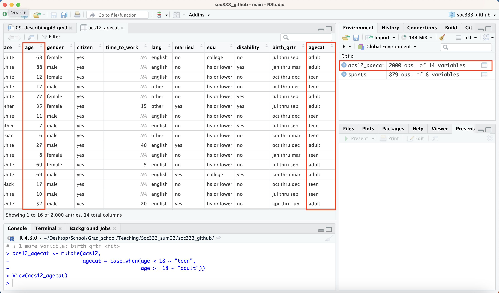

Rows: 2,000
Columns: 13
$ income <int> 60000, 0, NA, 0, 0, 1700, NA, NA, NA, 45000, NA, 8600, 0,…
$ employment <fct> not in labor force, not in labor force, NA, not in labor …
$ hrs_work <int> 40, NA, NA, NA, NA, 40, NA, NA, NA, 84, NA, 23, NA, NA, N…
$ race <fct> white, white, white, white, white, other, white, other, a…
$ age <int> 68, 88, 12, 17, 77, 35, 11, 7, 6, 27, 8, 69, 69, 17, 10, …
$ gender <fct> female, male, female, male, female, female, male, male, m…
$ citizen <fct> yes, yes, yes, yes, yes, yes, yes, yes, yes, yes, yes, ye…
$ time_to_work <int> NA, NA, NA, NA, NA, 15, NA, NA, NA, 40, NA, 5, NA, NA, NA…
$ lang <fct> english, english, english, other, other, other, english, …
$ married <fct> no, no, no, no, no, yes, no, no, no, yes, no, no, yes, no…
$ edu <fct> college, hs or lower, hs or lower, hs or lower, hs or low…
$ disability <fct> no, yes, no, no, yes, yes, no, yes, no, no, no, no, yes, …
$ birth_qrtr <fct> jul thru sep, jan thru mar, oct thru dec, oct thru dec, j…Describing data: part 3
Lecture 9
Aidan Combs
Duke University
SOCIOL 333 - Summer Term 1 2023
2023-06-01
Logistics
Project component 2: descriptive statistics
- All materials are posted (instructions, example, github repos)
- I will have feedback to you on your research questions soon
- After that, you’ll be able to do parts 1-3. Material for part 4 will be Monday.
- Due Tuesday June 6 11:59pm
- We will save some time to work on it in class Monday or Tuesday–start before then, come with questions!
Today
- Creating new variables
- Stringing commands together with pipes (
|>)
Creating variables
You may want to create new variables/change the response options of old variables
Example:
- RQ: How does employment status vary between teenagers (14-18) and adults (18+)?
Creating variables
- How does employment status vary by age category?
- We need to take the “age” variable and use it to create age categories (making a categorical variable from a numeric variable!)
Creating variables
- We do this with
mutate()andcase_when()
notice that this command spans multiple lines–this is totally fine!
- Parentheses matter more than lines for determining where a command starts/ends.
- Breaking long commands up between lines can make them more readable and easier to debug!
- RStudio does the helpful indenting for you.
- After commas is a good place to put line breaks
Creating variables
Rows: 2,000
Columns: 14
$ income <int> 60000, 0, NA, 0, 0, 1700, NA, NA, NA, 45000, NA, 8600, 0,…
$ employment <fct> not in labor force, not in labor force, NA, not in labor …
$ hrs_work <int> 40, NA, NA, NA, NA, 40, NA, NA, NA, 84, NA, 23, NA, NA, N…
$ race <fct> white, white, white, white, white, other, white, other, a…
$ age <int> 68, 88, 12, 17, 77, 35, 11, 7, 6, 27, 8, 69, 69, 17, 10, …
$ gender <fct> female, male, female, male, female, female, male, male, m…
$ citizen <fct> yes, yes, yes, yes, yes, yes, yes, yes, yes, yes, yes, ye…
$ time_to_work <int> NA, NA, NA, NA, NA, 15, NA, NA, NA, 40, NA, 5, NA, NA, NA…
$ lang <fct> english, english, english, other, other, other, english, …
$ married <fct> no, no, no, no, no, yes, no, no, no, yes, no, no, yes, no…
$ edu <fct> college, hs or lower, hs or lower, hs or lower, hs or low…
$ disability <fct> no, yes, no, no, yes, yes, no, yes, no, no, no, no, yes, …
$ birth_qrtr <fct> jul thru sep, jan thru mar, oct thru dec, oct thru dec, j…
$ agecat <chr> "adult", "adult", "teen", "teen", "adult", "adult", "teen…Checking your work
You should always find a way to check that your variables got created in the way you expected! Surprises later are not good…
table()is helpful for categorical variables in particular- sometimes for numeric as well, but it can get overwhelming
Or–look at the new data set in the data viewer! Click on its name in the environment tab. You can sort columns by value (like in Excel/Google Sheets).
Checking your work
- Did it work? Table!
0 1 2 3 4 5 6 7 8 9 10 11 12 13 14 15 16 17 18 19 20 21 22 23
adult 0 0 0 0 0 0 0 0 0 0 0 0 0 0 0 0 0 0 32 29 32 25 32 19
teen 21 14 23 26 21 25 24 24 26 22 27 39 29 29 27 18 20 24 0 0 0 0 0 0
<NA> 0 0 0 0 0 0 0 0 0 0 0 0 0 0 0 0 0 0 0 0 0 0 0 0
24 25 26 27 28 29 30 31 32 33 34 35 36 37 38 39 40 41 42 43 44 45 46 47
adult 24 21 16 24 25 26 25 12 26 28 21 22 23 25 25 23 28 14 19 27 24 16 33 25
teen 0 0 0 0 0 0 0 0 0 0 0 0 0 0 0 0 0 0 0 0 0 0 0 0
<NA> 0 0 0 0 0 0 0 0 0 0 0 0 0 0 0 0 0 0 0 0 0 0 0 0
48 49 50 51 52 53 54 55 56 57 58 59 60 61 62 63 64 65 66 67 68 69 70 71
adult 39 30 35 28 27 37 34 22 22 17 19 36 28 36 22 29 38 21 23 22 28 17 19 15
teen 0 0 0 0 0 0 0 0 0 0 0 0 0 0 0 0 0 0 0 0 0 0 0 0
<NA> 0 0 0 0 0 0 0 0 0 0 0 0 0 0 0 0 0 0 0 0 0 0 0 0
72 73 74 75 76 77 78 79 80 81 82 83 84 85 86 87 88 89 90 91 92 93 94
adult 14 11 16 9 18 14 9 17 5 8 10 5 8 5 8 1 12 6 2 1 2 10 5
teen 0 0 0 0 0 0 0 0 0 0 0 0 0 0 0 0 0 0 0 0 0 0 0
<NA> 0 0 0 0 0 0 0 0 0 0 0 0 0 0 0 0 0 0 0 0 0 0 0
<NA>
adult 0
teen 0
<NA> 0Checking your work
Functions for creating variables
mutate(): creates a new variable and adds it to your data framemutate(dataset, newvarname = value)
case_when(): lets you use conditions to tell mutate what the value of the new variable should be based on other variables that are already in your data frame.case_when(condition1 ~ value1, condition2 ~ value2, etc)
case_when()goes in thevalueslot ofmutate()
mutate()
mutate()can be used on its own—by itself, it creates a new variable where every observation has the same value
Rows: 2,000
Columns: 14
$ income <int> 60000, 0, NA, 0, 0, 1700, NA, NA, NA, 45000, NA, 8600, 0,…
$ employment <fct> not in labor force, not in labor force, NA, not in labor …
$ hrs_work <int> 40, NA, NA, NA, NA, 40, NA, NA, NA, 84, NA, 23, NA, NA, N…
$ race <fct> white, white, white, white, white, other, white, other, a…
$ age <int> 68, 88, 12, 17, 77, 35, 11, 7, 6, 27, 8, 69, 69, 17, 10, …
$ gender <fct> female, male, female, male, female, female, male, male, m…
$ citizen <fct> yes, yes, yes, yes, yes, yes, yes, yes, yes, yes, yes, ye…
$ time_to_work <int> NA, NA, NA, NA, NA, 15, NA, NA, NA, 40, NA, 5, NA, NA, NA…
$ lang <fct> english, english, english, other, other, other, english, …
$ married <fct> no, no, no, no, no, yes, no, no, no, yes, no, no, yes, no…
$ edu <fct> college, hs or lower, hs or lower, hs or lower, hs or low…
$ disability <fct> no, yes, no, no, yes, yes, no, yes, no, no, no, no, yes, …
$ birth_qrtr <fct> jul thru sep, jan thru mar, oct thru dec, oct thru dec, j…
$ species <chr> "human", "human", "human", "human", "human", "human", "hu…- but this isn’t super useful… the interesting variables are the ones that vary!
mutate()
- It can also be used with a single condition to create a binary (TRUE/FALSE) variable
case_when()
case_when()gives you more flexibility–can assign any values and create any number of categories- It is designed to work along with
mutate()(it isn’t useful by itself) - Conditions work the same as in
filter()
Adding more conditions/categories
- Our example from earlier: how does employment vary by age category?
- Should we really be analyzing 3 year olds alongside 17 year olds? And 83 year olds alongside 35 year olds?
Adding more conditions/categories
- Let’s add two more categories: “child” (<14) and “retired” (>67)
Conditions are evaluated in order–the value an observation gets is the first one that fits
Adding a “TRUE” at the end catches everybody who’s left over
- We could have also used the condition
age >= 67in place of TRUE–same result
- We could have also used the condition
Grouping multiple categories into one with |
- Similar to
filter()
Combining variables with &
- Sometimes we have two variables that we want to combine into one
- Useful when studying intersectional effects!
- Use
&if something has to meet multiple conditions at once–same asfilter().
acs_racegender <- mutate(acs12,
racegender = case_when(race == "black" & gender == "male" ~ "black man",
race == "white" & gender == "male" ~ "white man",
race == "black" & gender == "female" ~ "black woman",
race == "white" & gender == "female" ~ "white woman",
gender == "female" ~ "other race woman",
gender == "male" ~ "other race man"))Combining variables with &
, , = male
black man black woman other race man other race woman white man
white 0 0 0 0 800
black 108 0 0 0 0
asian 0 0 45 0 0
other 0 0 78 0 0
white woman
white 0
black 0
asian 0
other 0
, , = female
black man black woman other race man other race woman white man
white 0 0 0 0 0
black 0 98 0 0 0
asian 0 0 0 42 0
other 0 0 0 74 0
white woman
white 755
black 0
asian 0
other 0Why do this? Brief aside on intersectionality
Intersectionality: people are in many categories that affect their experiences in ways that are complicated! More than the sum of their parts.
- Categories like: race, gender, class, ethnicity, education, ability status…
Eg: the experience of being an Asian woman is not just the experience of being Asian (all genders) plus the experience of being a woman (all races)
- For instance: there are discriminatory stereotypes of Asian women that don’t apply to women generally or to Asian people generally–they’re unique to Asian women and have unique consequences
Intersectionality in analysis
We’re still developing good statistical methods
But analyzing variables representing combinations of categories instead of single categories in isolation is a good start
- eg: analyzing the relationship between health and race-gender combination, rather than health and race and then separately health and gender
Not feasible in small samples though :(
Common errors with variable creation
Errors and error messages
- R is very picky about syntax (spelling, capitalization, punctuation, symbols and their placement…)
- You will make mistakes. But you will get better at fixing them!
- Look carefully at format examples (copy/paste is your friend)
- Error messages can be cryptic and confusing–you will get better at decoding them
- Start looking for your mistake one step behind the place the error message complains about
Common errors
Error: <text>:3:43: unexpected symbol
2: agecat = case_when(age < 18 ~ "teen"
3: age
^- Watch for missing commas! (especially after copy/pasting)
Common errors
Error in `mutate()`:
ℹ In argument: `agecat = case_when(age < 18 ~ "teen", , age >= 18 ~
"adult")`.
Caused by error in `list2()`:
! Argument 2 can't be empty.- And extra commas too
Common errors
Error in `mutate()`:
ℹ In argument: `age >= 18 ~ "adult"`.
Caused by error:
! `age >= 18 ~ "adult"` must be a vector, not a <formula> object.- Parentheses tell R where each command starts and ends–misplacing them confuses it!
Common errors
acs12_agecat <- mutate(acs12,
agecat <- case_when(age < 18 ~ "teen",
age >= 18 ~ "adult"))
table(acs12_agecat$agecat)< table of extent 0 >Rows: 2,000
Columns: 14
$ income <int> 60000, 0…
$ employment <fct> not in l…
$ hrs_work <int> 40, NA, …
$ race <fct> white, w…
$ age <int> 68, 88, …
$ gender <fct> female, …
$ citizen <fct> yes, yes…
$ time_to_work <int> NA, NA, …
$ lang <fct> english,…
$ married <fct> no, no, …
$ edu <fct> college,…
$ disability <fct> no, yes,…
$ birth_qrtr <fct> jul thru…
$ `agecat <- case_when(age < 18 ~ "teen", age >= 18 ~ "adult")` <chr> "adult",…Common errors
Inside mutate, use =, not <- (yes, it is pretty arbitrary)
Common errors
Error: <text>:2:52: unexpected '='
1: acs12_agecat <- mutate(acs12,
2: agecat = case_when(age < 18 =
^- And inside
case_when(), use~, not=(yes, that’s pretty arbitrary too)
Common errors
acs12_agecat <- mutate(acs12,
agecat = case_when(age < 18 ~ "teen",
age > 18 ~ "adult"))
table(acs12_agecat$agecat, acs12$age, useNA = "always")
0 1 2 3 4 5 6 7 8 9 10 11 12 13 14 15 16 17 18 19 20 21 22 23
adult 0 0 0 0 0 0 0 0 0 0 0 0 0 0 0 0 0 0 0 29 32 25 32 19
teen 21 14 23 26 21 25 24 24 26 22 27 39 29 29 27 18 20 24 0 0 0 0 0 0
<NA> 0 0 0 0 0 0 0 0 0 0 0 0 0 0 0 0 0 0 32 0 0 0 0 0
24 25 26 27 28 29 30 31 32 33 34 35 36 37 38 39 40 41 42 43 44 45 46 47
adult 24 21 16 24 25 26 25 12 26 28 21 22 23 25 25 23 28 14 19 27 24 16 33 25
teen 0 0 0 0 0 0 0 0 0 0 0 0 0 0 0 0 0 0 0 0 0 0 0 0
<NA> 0 0 0 0 0 0 0 0 0 0 0 0 0 0 0 0 0 0 0 0 0 0 0 0
48 49 50 51 52 53 54 55 56 57 58 59 60 61 62 63 64 65 66 67 68 69 70 71
adult 39 30 35 28 27 37 34 22 22 17 19 36 28 36 22 29 38 21 23 22 28 17 19 15
teen 0 0 0 0 0 0 0 0 0 0 0 0 0 0 0 0 0 0 0 0 0 0 0 0
<NA> 0 0 0 0 0 0 0 0 0 0 0 0 0 0 0 0 0 0 0 0 0 0 0 0
72 73 74 75 76 77 78 79 80 81 82 83 84 85 86 87 88 89 90 91 92 93 94
adult 14 11 16 9 18 14 9 17 5 8 10 5 8 5 8 1 12 6 2 1 2 10 5
teen 0 0 0 0 0 0 0 0 0 0 0 0 0 0 0 0 0 0 0 0 0 0 0
<NA> 0 0 0 0 0 0 0 0 0 0 0 0 0 0 0 0 0 0 0 0 0 0 0
<NA>
adult 0
teen 0
<NA> 0- Make sure your conditions catch everyone! This is a benefit of using a catchall
TRUEcondition at the end.
Exercise: Creating new variables
Clone and open the project repo now (ex-6-1-yourusername)
Then open the .qmd file and try out some variable creation